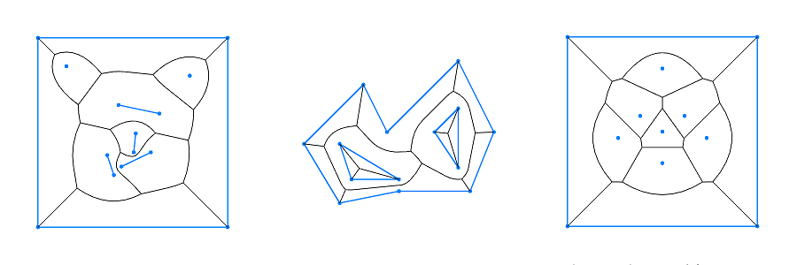

目录
- Boost.Polygon 主页
- 设计概述
- 各向同性
- 坐标概念
- 区间概念
- 点概念
- Segment 概念
- 矩形概念
- Polygon 90 概念
- 带孔 Polygon 90 概念
- Polygon 45 概念
- 带孔 Polygon 45 概念
- 多边形概念
- 带孔多边形概念
- Polygon 90 集合概念
- Polygon 45 集合概念
- 多边形集合概念
- 90 度连通性提取
- 45 度连通性提取
- 连通性提取
- 90 度属性合并
- 45 度属性合并
- 属性合并
- Voronoi 主页
- Voronoi 基准测试
- Voronoi 构建器
- Voronoi 图
其他资源
Polygon 赞助者

BOOST POLYGON VORONOI 扩展

Boost Polygon 库的 Voronoi 扩展提供构造二维空间中点与线段集合的Voronoi 图 的功能, 带有以下限制集:
- 输入点的坐标与输入线段端点的坐标应为整数类型. 默认实现支持 int32 数据类型. 通过配置坐标类型特征可以支持其他数据类型 (例如 int64) (Voronoi 进阶教程).
- 除端点外, 输入点与线段不应重叠. 这意味着输入点不应位于输入线段内部, 且输入线段除端点外不应相交.
线段功能完备
即使把商业库考虑在内, 能处理包含线段的输入数据集的 Voronoi 图构建算法实现也屈指可数. 对线段的支持允许对任何输入几何进行离散化 (采样的浮点坐标可以缩放并吸附到整数网格): 圆、椭圆、抛物线. 这一功能可以计算任意输入几何集合的中轴变换, 在计算机视觉项目中有直接应用.稳健性与效率
稳健性问题可以分为两大类: 内存管理问题和数值稳定性问题. 本实现通过使用纯 STL 数据结构避免了第一类问题, 因此代码中没有 new 运算符. 第二类问题通过多精度几何谓词解决. 即使对商业库而言, 使用这类谓词也会导致性能大幅下降. 本库实现克服了这一点: 在 95% 的情况下通过使用高效的、基于浮点数的谓词来避免多精度计算. 这类谓词并不总能产生正确的结果, 但库内嵌了相对误差算术机制来识别此类情况, 并在适当时切换到更高精度的谓词. 最终, 与其他已知库相比, 本实现具有出色的性能 (更多细节见基准测试).输出结构的精度
本实现保证, 输出几何坐标的相对误差至多为 64 个机器 epsilon (对 IEEE-754 浮点类型即尾数 6 位), 而平均而言略低一些. 这意味着, 只需使用具有更大尾数的浮点类型即可提高输出几何的精度. 这一论断的实际意义见下表:| 输出坐标类型 | 输出坐标值 | 最大绝对误差 | 精确值范围 |
| double (53 位尾数) | 1 | 2-53 * 26 = 2-47 | 1 ± 2-47 |
| double (53 位尾数) | 231 | 2-53 * 231 * 26 = 2-16 | 231 ± 2-16 |
| long double (64 位尾数) | 1 | 2-64 * 26 = 2-58 | 1 ± 2-58 |
| long double (64 位尾数) | 231 | 2-64 * 231 * 26 = 2-27 | 231 ± 2-27 |
在完成步骤中, 本实现会合并两个坐标都位于相对误差范围 (等于 128 个机器 epsilon) 内的 Voronoi 顶点, 并移除它们之间的所有 Voronoi 边. 这是唯一可能导致算法输出拓扑与理论上精确拓扑不同的情况, 实际上意味着: 对于太阳系内一组刚体的 Voronoi 图 (半径 242 米), 以及 long double (64 位尾数) 输出坐标类型, 太阳系矩形内的最大绝对误差将等于 2-64 * 242 * 26 = 2-18 米; 因此, 两个坐标都位于 2-18 米 (8 微米, 即一个细菌的大小) 以内的顶点将被视为相等并合并.
简单接口
boost/polygon/voronoi.hpp 库头文件定义了以下静态函数, 用于把 Voronoi 扩展的功能与 Boost.Polygon 接口集成:| template
<typename Point, typename VB> size_t insert(const Point &point, VB *vb) |
把一个点插入 Voronoi 构建器数据结构. 点类型应建模点概念. 返回所插入站点的索引. |
| template
<typename PointIterator, typename VB> void insert(PointIterator first, PointIterator last, VB *vb) |
把点的迭代器范围插入 Voronoi 构建器数据结构. 相应的点类型应建模点概念. |
| template
<typename Segment, typename VB> size_t insert(const Segment &segment, VB *vb) |
把一条线段插入 Voronoi 构建器数据结构. 线段类型应建模线段概念. 返回所插入站点的索引. |
| template
<typename SegmentIterator, typename VB> void insert(SegmentIterator first, SegmentIterator last, VB *vb) |
把线段的迭代器范围插入 Voronoi 构建器数据结构. 相应的线段类型应建模线段概念. |
| template
<typename PointIterator, typename VD> void construct_voronoi(PointIterator first, PointIterator last, VD *vd) |
构造一个点集合的 Voronoi 图. 相应的点类型应建模点概念. 复杂度: O(N * log N), 内存使用: O(N), 其中 N 为输入点的总数. |
| template
<typename SegmentIterator, typename VD> void construct_voronoi(SegmentIterator first, SegmentIterator last, VD *vd) |
构造一个线段集合的 Voronoi 图. 相应的线段类型应建模线段概念. 复杂度: O(N * log N), 内存使用: O(N), 其中 N 为输入线段的总数. |
| template
<typename PointIterator, typename SegmentIterator, typename VD> void construct_voronoi(PointIterator p_first, PointIterator p_last, SegmentIterator s_first, SegmentIterator s_last, VD *vd) |
构造一个点与线段集合的 Voronoi 图. 相应的点类型应建模点概念. 相应的线段类型应建模线段概念. 复杂度: O(N* log N), 内存使用: O(N), 其中 N 为输入点与线段的总数. |
下面两行代码构造一个点集合的 Voronoi 图 (只要相应的输入几何类型满足 Boost.Polygon 概念模型 要求):
voronoi_diagram<double> vd;
construct_voronoi(points.begin(), points.end(), &vd);
本库提供了清晰的接口, 用于把用户数据与输出几何关联并高效地遍历 Voronoi 图. 关于这些主题的更多细节见Voronoi 基础教程. 带坐标类型配置的库高级用法在Voronoi 进阶教程 中说明. 本库允许用户基于Voronoi 构建器 API 实现自己的 Voronoi 图 / Delaunay 三角剖分构建例程.
无第三方依赖
Boost Polygon 库的 Voronoi 扩展不依赖任何第三方代码, 对 Boost 库只有单一依赖: boost/cstdint.hpp. 所需的全部多精度类型及相关功能都封装为实现的一部分. 本库编译速度快 (3 个公共头文件和 4 个私有头文件), 组件之间内聚性强, 并且与 Boost Polygon 库的其余部分明确地模块化, 通过voronoi.hpp 头文件进行可选集成.可扩展以支持用户提供的坐标类型
该实现与坐标类型无关. 只要用户提供的类型满足Voronoi 构建器 坐标类型特征的要求集, 无需对算法或谓词的实现做任何额外修改. 例如, 可以使用 256 位整数输入坐标类型和 512 位输出浮点类型构造 Voronoi 图, 而无需对库做任何更改.后续开发
下面列出了本库未来可能的发展方向.- Delaunay 三角剖分数据结构的实现.
- 中轴数据结构的实现.
- Voronoi 图数据结构的序列化工具.
- 取消对输入几何不相交的限制.
- 支持不同类型的距离度量.
理论研究
Voronoi 扩展是作为 2010 年 Google Summer of Code 的一部分开发的. 该库在最近三年一直得到积极维护, 并涉及算法、数据结构、相对误差算术与数值稳健性领域的深入数学研究. 应社区要求, 将发布更多关于实现理论方面的细节. 作者要感谢 Steven Fortune 的文章 "A Sweepline algorithm for Voronoi diagrams", 其中涵盖了当前实现的基本思想.| 版权: | 版权所有 © Andrii Sydorchuk 2010-2013. |
|---|---|
| License: | 按 Boost 软件许可 1.0 版 (Boost Software License, Version 1.0) 分发. (随附文件 LICENSE_1_0.txt 或复制于 http://www.boost.org/LICENSE_1_0.txt) |